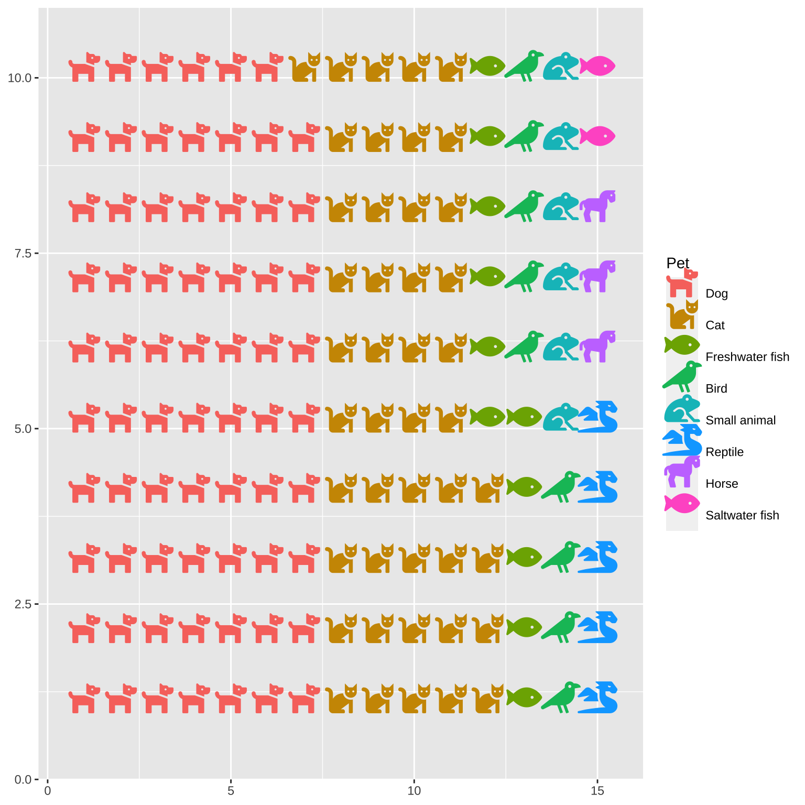
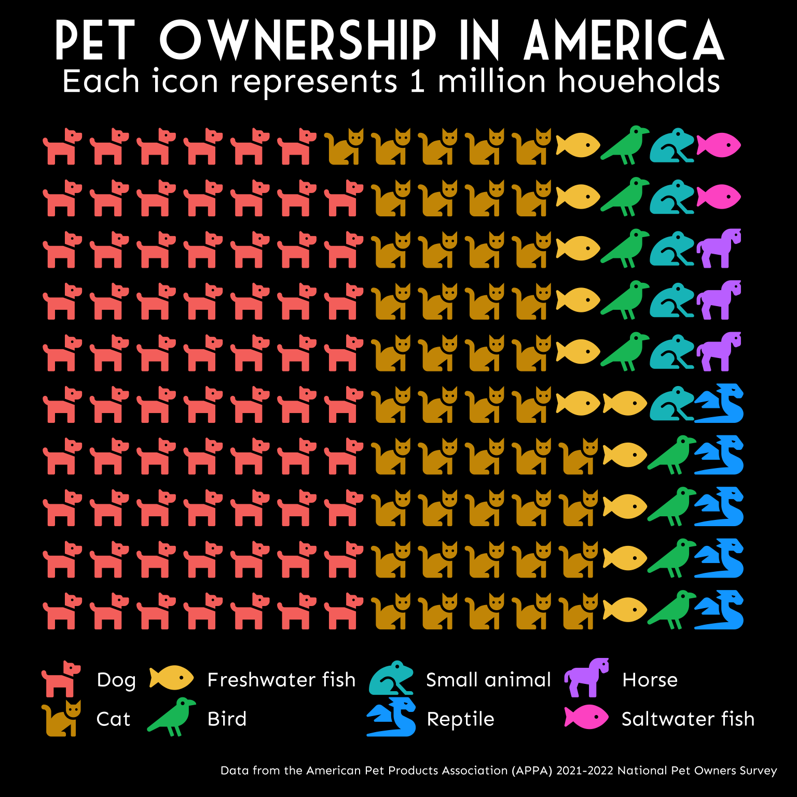

2 Pictogram
I recently discovered the waffle package for making waffle plots. Emily and I refuse to teach students on our Applied Data Skills course how to make pie charts, and these are a sweet alternative.
2.1 Fonts
I’m never sure what I’m doing with fonts, but this procedure seems to work to install the FontAwesome fonts that you need for pictograms and also any other specialist fonts you’d like.
Code
waffle::install_fa_fonts()
fontdir <- "/Library/Frameworks/R.framework/Versions/4.1/Resources/library/waffle/fonts/"
font_add(family = waffle::fa5_brand,
regular = paste0(fontdir, "fa-brands-400.ttf"))
font_add(family = waffle::fa5_solid,
regular = paste0(fontdir, "fa-solid-900.ttf"))
# https://www.dafont.com/market-deco.font
font_add(family = "Market Deco",
regular = "fonts/Market_Deco.ttf")
font_add_google("Sen")
showtext_auto()2.2 Pictogram data
Pictograms are generally used for counts, and pets are my go-to example for unordered categorical data (even though ferrets are obviously the best).
I found a table of pet ownership in the USA. They had an excel file download option for the data, but the file was corrupted, so I used datapasta to copy it below.
2.3 Icons
Then I need to find matching free icons at fontawesome.
Make sure you’re searching the v5 icons; v6 icons won’t work and will result in an impenetrable error-message from scale_label_pictogram().
## Error in vapply(if (n > length(values)) rep(values[[1]], n) else values, : values must be length 1,
## but FUN(X[[8]]) result is length 0Yes, I know I used fish twice, and not many people owned winged dragons, but they were the only reptile!
2.4 Colour
Now, let’s add some colour. I’m also going to make the icon size a little smaller.
Code

I like the ggplot default colours, except for the green fish. I’d rather it be yellow. I found this function to re-create the ggplot default colour scheme.
2.5 Clean it up
Add coord_equal() to make sure the horizontal and vertical spacing are the same. Add theme_enhance_waffle() to get rid of extraneous background, and add labels to aid interpretation and for the data provenance.
Code
ggplot(us_pets, aes(label = Pet, values = Number, color = Pet)) +
geom_pictogram(size = 6.5) +
scale_label_pictogram(values = icons) +
scale_colour_manual(values = pet_colours) +
coord_equal() +
theme_enhance_waffle() +
labs(title = "Pet Ownership in America",
subtitle = "Each icon represents 1 million houeholds",
caption = "Data from the American Pet Products Association (APPA) 2021-2022 National Pet Owners Survey")2.6 Customise
Finally, use theme() to really customise the look. I adjusted the spacing between the items on the legend with legend.spacing.y, which requires the guides to be set byrow to work.
Code
ggplot(us_pets, aes(label = Pet, values = Number, color = Pet)) +
geom_pictogram(size = 6.5) +
scale_label_pictogram(values = icons) +
scale_colour_manual(values = pet_colours) +
coord_equal() +
theme_enhance_waffle() +
labs(title = "Pet Ownership in America",
subtitle = "Each icon represents 1 million houeholds",
caption = "Data from the American Pet Products Association (APPA) 2021-2022 National Pet Owners Survey") +
theme(axis.ticks = element_blank(),
plot.background = element_rect(fill = "black", color = "black"),
plot.margin = unit(c(.5, .5, .5, .0), 'cm'),
plot.title = element_text(family = "Market Deco", hjust = 0.5),
plot.subtitle = element_text(hjust = 0.5),
plot.caption.position = "plot",
panel.background = element_rect(fill = "black", color = "transparent"),
legend.background = element_blank(),
legend.title = element_blank(),
legend.key = element_blank(),
legend.text = element_text(vjust = 1),
legend.spacing.y = unit(.25, 'cm'),
text = element_text(family = "Sen", color = "white")) +
## required to make legend.spacing.y work
guides(color = guide_legend(byrow = TRUE),
label = guide_legend(byrow = TRUE))
2.7 Save Pictogram
However, I had trouble saving the plot using ggsave(). The icons ended up all question marks. I eventually fixed that by doing something with the fonts (maybe adding them with showtext?), but the icons were still tiny, and the font was blurry at a dpi that makes the icons look right.
This turned out to be because ggsave() uses ragg by default (HT Steve Haroz), which isn’t playing well with fontawesome icons, so I had to set the device back to png. However, this wasn’t a problem when I updated my R and RStudio and started using Quarto (not sure which fixed it).